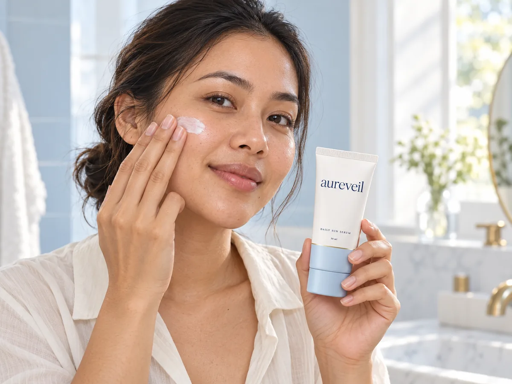
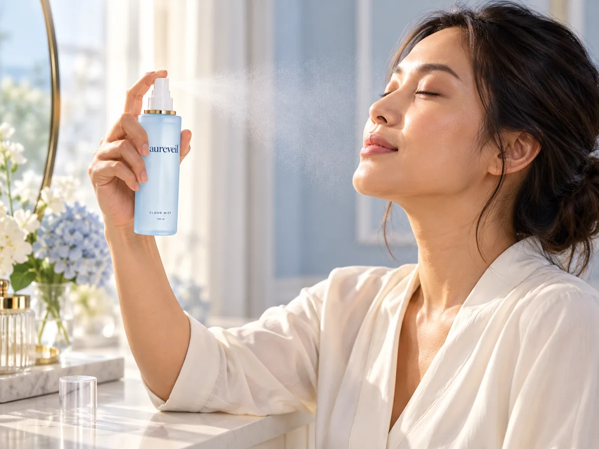

Little steps. Lasting habits.
Make care
part of your day.
Two essentials with different roles. Here is how to make room for each.

The everyday essential
Protect your day.
Keep it simple.
- 01
Finish your skincare.
Apply sunscreen after your basic skincare, before makeup. Use the amount and method stated on its label.
- 02
Give every area care.
Cover exposed skin, including your neck and ears. Apply about 15 minutes before going outside.
- 03
Keep up your protection.
Reapply at least every two hours outdoors and after swimming or sweating, following the label. Pair with shade and protective clothing.
Sunscreen application guidance from the AAD (opens in a new tab)
Meet your daily SPF
Your little reset
A softer pause.
A fine cloud of care.
- 01
Make a little space.
Hold the bottle 20–30cm from your face and close your eyes.
- 02
Mist lightly.
Spray once or twice, following your packaging’s directions.
- 03
Let it settle.
Allow it to absorb. For morning skincare, follow with your sunscreen step.
Cloud Mist hydrates and refreshes. It does not provide SPF or promise longer makeup wear.
Discover the mistYour morning, thoughtfully ordered
A ritual with
room to breathe.
Keep the steps that work for you.
- 01
Cleanse
Begin with your usual care.
- 02
Hydrate
Mist and moisturise as preferred.
- 03
Protect
Finish skincare with sunscreen.
- 04
Get ready
Let sunscreen settle before makeup.
A little clarity.
A more considered ritual.
Make your next step a comfortable one.